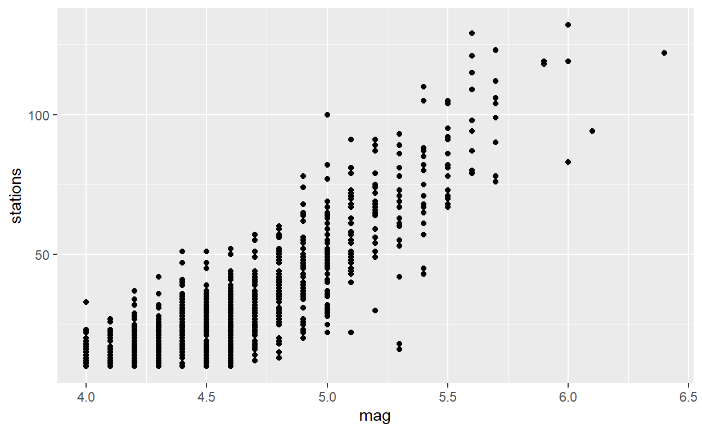

Introduction
In this module we will review a lot of key concepts around statistical modelling, using one of the simplest statistical models as our main reference point to illustrate these points.
So this week we will be looking into simple linear regression models, and then in the next module we will look at lots of different ways we can build upon and extend this.
We are assuming that you have come across the topic of linear
regression models before. Even if you have, there is a nice video from
Crash Course Statistics which provides a nice refresher of the
methodology.
Data used in this session
The data used for this session is the same one that we saw back in the Exercises for the Exploratory Data analysis module - concerning earthquakes near Fiji.
DT::datatable(quakes)Reference for the data:
This is one of the Harvard PRIM-H project data sets. They in turn obtained it from Dr. John Woodhouse, Dept. of Geophysics, Harvard University.
Why do we need a model anyway?
In general there are three purposes for which a statistical model is useful (although with multiple sub-purposes within each category):
- Understand which variables are related to our response; and quantify the nature of their relationship, using the model to providing a link between the data and reality.
- Test hypotheses which are more complex and account for multiple sources of variation, which could not be considered through simple hypothesis tests
- Predict results for future observations, or those with unknown “response” values but known “predictor” values
The better our statistical model is the better we will be able to achieve any or all of these objectives - a bad statistical model will result in poor understanding
Simple linear regression
As a starting point for any model we would need to split up our variables into two categories - “outcome” variables and “predictor” variables. There is a lot of different terminology used her to mean exactly the same thing the most common being “Outcome”/“Dependent”/“Response”/“y” variables on one side vs. “Predictor”/“Independent”/“Explanatory”/“x” on the other.
For a “simple linear regression” we are interested in how changing the value of one “Predictor” variable will influence the values of our “Response” variable. Extending to a “general linear model” will allow for multiple predictor variables, but still with just one response variable per model. Multivariate models are required where we have more than one response variable that we want to include.
If you remember the variables from the quakes dataset -
we may be interested to explore the relationship between how many
monitoring stations reported the event, and how large the magnitude of
the earthquake was.
When thinking about this in terms of a model, we would probably want
to consider stations as the outcome and
magnitude as the response when thinking about the nature of
the relationship between these variables. There is a clear temporal
relationship - the earthquake happens and then the stations do or not
detect it as a response to the earthquake. A higher intensity of
earthquake is likely to lead to a higher number of stations being able
to detect the presence of the earthquake. But more stations being able
to detect the earthquake will not lead to the earthquake being more
intense; by the time the stations have (or have not) detected the
earthquake the ‘real’ value magnitude of that earthquake is already set.
(Although of course there may be an additional, slightly tangential,
argument about the calibration of the value for the Richter scale being
determined based on the stations observations, there is a theoretical
‘real’ value for the magnitude that is already fixed by that point).
Exploring the Data
Let’s first of all investigate our data, to take a look at the relationship between magnitude, our “predictor” variable, which should live on the “x” axis; and stations, our response variable on the “y” axis.
ggplot(data=quakes,aes(y=stations ,x=mag ))+
geom_point()
Looking at this graph, we can see a pretty clear trend - as magnitude is increasing the number of stations is also increasing. Because of the way the data is collected we see points stacked up vertically - remember than the magnitude is recorded to just 1 decimal place so there is a restricted number of possible values.
This does make it easier to summarise this trend numerically as well as visually - for each magnitude value we can calculate the mean number of stations:
quakes %>%
group_by("Magnitude"=mag) %>%
summarise("Number of Earthquakes"=n(),"Average Number of Stations"=mean(stations)) %>% gt()| Magnitude | Number of Earthquakes | Average Number of Stations |
|---|---|---|
| 4.0 | 46 | 14.89130 |
| 4.1 | 55 | 15.72727 |
| 4.2 | 90 | 18.43333 |
| 4.3 | 85 | 19.30588 |
| 4.4 | 101 | 22.27723 |
| 4.5 | 107 | 24.38318 |
| 4.6 | 101 | 27.31683 |
| 4.7 | 98 | 31.22449 |
| 4.8 | 65 | 36.76923 |
| 4.9 | 54 | 42.85185 |
| 5.0 | 47 | 48.48936 |
| 5.1 | 43 | 57.48837 |
| 5.2 | 29 | 66.68966 |
| 5.3 | 21 | 64.80952 |
| 5.4 | 20 | 74.50000 |
| 5.5 | 14 | 83.07143 |
| 5.6 | 9 | 101.33333 |
| 5.7 | 8 | 98.50000 |
| 5.9 | 2 | 118.50000 |
| 6.0 | 3 | 111.33333 |
| 6.1 | 1 | 94.00000 |
| 6.4 | 1 | 122.00000 |
This is probably too many numbers to be useful - but we could summarise even further, grouping by 0.5 jumps.
quakes %>%
mutate(mag2=cut(mag,breaks=c(0,4.45,4.95,5.45,5.95,6.45),labels=c("4.0-4.4","4.5-4.9","5.0-5.5","5.5-4.9","6.0-6.4"))) %>%
group_by("Magnitude"=mag2) %>%
summarise("Number of Earthquakes"=n(),"Average Number of Stations"=mean(stations)) %>% gt()| Magnitude | Number of Earthquakes | Average Number of Stations |
|---|---|---|
| 4.0-4.4 | 377 | 18.83289 |
| 4.5-4.9 | 425 | 30.89882 |
| 5.0-5.5 | 160 | 59.60000 |
| 5.5-4.9 | 33 | 93.93939 |
| 6.0-6.4 | 5 | 110.00000 |
Correlation
As a quick reminder we can calculate a correlation coefficient; and also create a statistical hypothesis test around this. Our null hypothesis would be “The correlation coefficient is zero”,“i.e there is no correlation between magnitude and number of stations reporting”
quakes %>%
summarise(cor(mag,stations))
cor.test(quakes$mag,quakes$stations)The correlation is pretty strong, -0.69, as we might expect from looking at the plot. It is negative, because hippocampus volume is decreasing with an increase in years of football playing. But correlation coefficient is a very limited type of analysis - we can learn much more through using a modelling approach.
Fitting a line to the plot
You probably learnt at school about the idea of ‘putting a line
through’ your points when you see a scatter plot like this. We have
already learnt about geom_smooth, but as discussed
previously it defaults to a moving average type model. However we can
change the method argument to fit a simple straight line
instead. Looking at the plot, a straight line does look like a
reasonable choice for modelling this data.
ggplot(data=quakes,aes(y=stations ,x=mag ))+
geom_point()+
geom_smooth(method="lm")By default we see a 95% confidence interval shaded around the trend line.
Fitting the Model
To examine what we actually have in our model, we need to fit the
model ourself. We do this using the lm() command. The
syntax for this is very similar to what we saw in the previous module
for t-tests, with a response variable, a tilde, then the explanatory
variable. Like with the t.test function, the data argument
comes after the formula. So if we were to use a pipe from data into
lm() we would need to specify data=. within
the lm function.
lm(stations~mag,data=quakes)The output here only tells us two things:
- “Call” - simply repeating back the model we have specified
- “Coefficients”: Telling us the values of the parameters
A linear regression follows the equation of a straight line y = B0 + B1x. You may have learnt this same equation as y=a+bx or y=mx+c ; depending on where and when you went to school.
The coefficients give us the value of our intercept (B0): 7599 and the value of our slope (B1): -130.
So the overall model would be:
Number of Stations = -180 + 46 * Magnitude + \(\epsilon\)
The value of the intercept is interpreted as the expected value of the response variable where all explanatory variables are equal to zero. So for an earthquake of 0.0 on the Richter scale we would expect that -180 stations would report this. For obvious reasons this is not a sensible interpretation to make! And it is often the case that the intepretation behind the intercept is not going to be useful, because it would involve extrapolation beyond the observed domain of the data.
The value of the slope represents the change we expect to see in the response variable for a one unit increase in the magnitude. So for a one point increase in the richter scale intensity we would expect 46 more stations to report the earthquake
The output at this stage has not told us anything about the error term, \(\epsilon\).
However we can get much more information from our model than this! R is a little different from many other software packages, which will produce a lot of different outputs when you create a model. In R you have to ask specifically for what you want out of a model.
Summarising the model
mod1<-lm(stations~mag,data=quakes)
summary(mod1)summary() provides us with a lot of useful information
in a customised output format containing model fit statistics, standard
errors and p-values for the coefficients.
The broom library also provides the functions
glance() and tidy(). This extracts very
similar information to summary() but returns it in the form
of data frames. This can be very useful if we want to export results
from this model into other analyses or to make the output look nice in
our reports.
Overall the information tells us that the relationship between the Years playing football and hippocampus volume is highly significant. p<0.001
The intercept is also significant! But remember that this is almost certainly not of interest. The null hypothesis which generates this p-value is that the intercept is equal to 0. Which is probably not a sensible null hypothesis to test, an earthquake of magnitude 0.0 (i.e. no earthquake) will by definition be detected by 0 stations - unless there is a problem with detecting False Positives.
We can also see that 72% of the variability in the number of stations can be explained by the linear increase in the magnitude. You can read a little bit about r-squared, and why the adjusted r-squared is also a useful metric to consider here.
We have actually seen this 72% number before (sort of). Look at the square root of this number:
sqrt(0.7245)## [1] 0.8511757Where have you seen this number before?
Maybe you remember it from here:cor(quakes$mag,quakes$stations)confint(linreg_mod)Checking Model
We should also check our residual plots to assess model validity. It is worth recapping, or learning how to interpret these plots, as it can take some practice to know what you are looking for. “Statistics by Jim” has a nice overview: https://statisticsbyjim.com/regression/ols-linear-regression-assumptions/
autoplot(mod1)Do these plots look OK? What are we actually looking for here?
In this case, most of the plots look fine:
- There are some apparent trends in the first plot. Suggesting that a straight line is not a sensible model.
- The second plot shows points for the most part lining up nicely, but with deviation at the higher end of the range away from normality.
- In the third plot there is some clear evidence of an increase in variability with increasing predicted value. But this is not a major deviation - the trend line being drawn on the scale location plot perhaps looks worse than it should, because of how well predicted the two lowest values in the data were.
- In the fourth plot we can see an association between the higher leverage points, and the higher residual values. Indicating that the outlying values may be influecing our trends
One thing that has the potential to account for any of those issues in the model validity is if there are key un-accounted variables that could be added to the model, to explain the trends seen in the curvature and the higher end of the range.
Add extra variables into the model. Other variables may help to explain why there are non-linear patterns, or why some values appear to be outliers.
Remove outliers, and conduct a sensitivity analysis. By comparing results with and without individual strange looking points, this will help us understand whether these outliers have any impact on our conclusions.
Transform variables. Different transformations may help to model non-linear relationships, particular considering different types of curves. Log transformations can also help with heterogeneity, in particular if variance is increasing as the response variable increases. Sometimes transformations might help to deal with issues with normality as well.
Where we still see problems, there are several things we could do to try to improve our model. Our actions would depend on what problems we observed.
- With severe violations of normality or heterogeneity we may consider moving to a generalised linear model. This will make a different set of distributional assumption about our residuals. In fact for this data set our outcome variable, stations, also has a particular characteristic - it is always an integer. Integer variables cannot perfectly follow normal distributions, which require truly continuous data, instead they follow Poisson distributions. As the average value of an integer type variable increases then the Poisson distribution increasingly becomes more and more similar to a Normal distribution, so in many cases a Normal approximation for an integer variable is perfectly valid.
Making predictions
Remember in our original data we had nobody who had between 1 and 6 years of football experience. If we are happy we have a sensible model then we can make predictions about what we would expect the average hippocampus volume to be for footballers with that level of experience.
To make predictions we first need to create a new data frame containing the values we want to predict. In this example we just have one explanatory variable, so we create a data frame with just one variable. The variable name in the new data frame has to match the variable name from the original data. If we had a model with more than one variable we would need to make sure that the prediction data frame contains new variables for all of the variables from the model.
predict_data<-data.frame(Years=1:6)
predict_dataWe can either use the function predict() or
augment().
predict() is the function from base-R, which will return
just the predicted values. I prefer the augment() function
from the broom library which adds the predictions into the
existing data frame. You can see the difference in the output below, but
the syntax within these two functions is identical: the name of the
model, followed by a newdata= argument for the name of the
data frame we want to predict over.
augment(linreg_mod,newdata=predict_data)
predict(linreg_mod,newdata=predict_data)
You can see the fitted values are the same from both functions, but
the output from augment returns the predictions in a more
usable format, and also provides standard errors.
We might want to add these predictions onto the plot we made earlier.
predict_data<-augment(linreg_mod,newdata=predict_data)
ggplot(data=FootballBrain,aes(y=Hipp,x=Years))+
geom_point()+
geom_point(data=predict_data,aes(y=.fitted,x=Years),inherit.aes = FALSE,color="red",size=4)
This particular plot is maybe not that useful, since drawing the line
with geom_smooth is a better way of showing the same
information.
But I think it is useful to know that in ggplot, you can set
different data sets to be used within each geom. This is
something we have not seen before! You are able to specify different
data and/or aesthetics to be used within any geometry, as long as you
also include the argument inherit.aes=FALSE.
References
Simple Linear Regression in R (Marin Stats Lectures): https://www.youtube.com/watch?v=66z_MRwtFJM There are lots of subsequent videos on this channel about other statistical modelling techniques
Linear Regression Tutorial: (UC Business Analytics R Programming Guide) https://uc-r.github.io/linear_regression
Common statistical tests are linear models (Jonas Lindeløv): https://lindeloev.github.io/tests-as-linear/
When to use regression Analysis (Statistics by Jim): https://statisticsbyjim.com/regression/when-use-regression-analysis/
UCLA Data Analysis Examples: https://stats.idre.ucla.edu/other/dae/